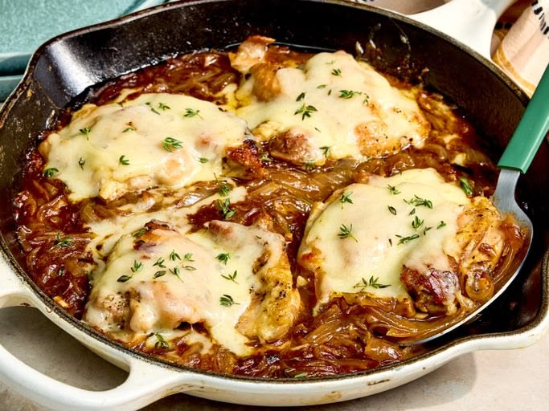

Skillet French Onion Smothered Chicken
Home

You will love this skillet French onion smothered chicken. Chicken thighs are cooked nestled in a caramelized onion mixture that is just the right texture—saucy and jammy—and is topped with melted Gruyere.
Ingredients
- 4 (5- ounce each) boneless skinless chicken thighs
- 2 teaspoons kosher salt
- 1 teaspoon freshly ground black pepper
- 2 tablespoons olive oil
- 3 small sweet onions, thinly sliced
- 2 cloves garlic, finely chopped
- 1 tablespoon all purpose flour
- 2 teaspoons balsamic vinegar
- 2 teaspoons chopped fresh thyme, plus additional thyme leaves for garnish
- 1 cup chicken broth, plus more as needed
- 1 cup shredded Gruyere cheese
Steps
- Preheat the oven to 400 degrees F (200 degrees C).
- Pat chicken thighs dry and sprinkle evenly with salt and pepper on all sides. Heat oil in an oven-safe skillet over medium-high heat. Place chicken thighs in the skillet and cook until golden brown on both sides, 6 to 8 minutes per side. Remove chicken from the skillet and set aside; reduce heat to medium-low.
- Add onions and cook, stirring occasionally and scraping up fond from bottom of skillet, until deeply browned and softened, about 20 minutes. If skillet becomes too dry, add a splash of chicken broth as needed.
- Add garlic, flour, vinegar, and thyme and cook, stirring constantly, until fragrant and no dry flour remains, about 1 minute. Stir in broth and bring to a simmer over medium heat. Nestle chicken into the onion mixture and top chicken with Gruyère cheese (about 1/4 cup per chicken thigh).
- Transfer skillet to the preheated oven and bake until cheese has melted, and sauce has reduced slightly, about 10 minutes. An instant-read thermometer inserted near the center should read at least 165 degrees F (74 degrees C).
- Remove skillet from the oven and garnish with thyme leaves. Let cool 10 minutes before serving.